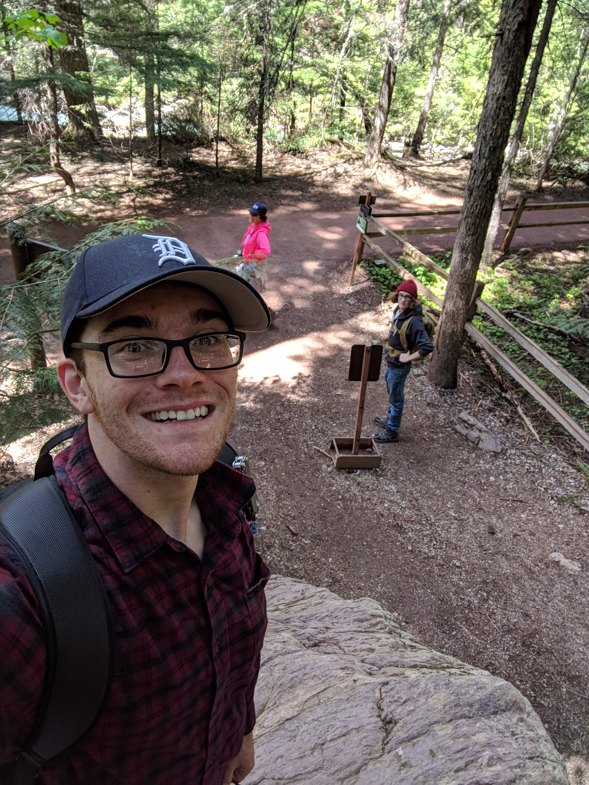

About Me

I am a resourceful hard worker. A quick learner who is able to work as an effective team member to ensure the work done lives up to my high standards. I love working through puzzles and problem solving, and feel most fulfilled when I am able to help others in anyway. I am proficient in Java, Python, HTML, and CSS programming languages.
Programming Projects
Python
Java
Work History
QBE
IT Support Technician
Oct 2019 - Current
- Responsible for working as part of a team to provide quick and effective fixes for technical issues while focusing on customer service.
- Imaging and wiping builds of Widows on company machines and gaining an understanding of the process a company goes through in implementing specific policy changes into any given build of windows in order to make it suitable for deployment.
- Gaining knowledge and experience working with virtual machines including working in Citrix Workspace which is an industry leader and used in many companies worldwide.
- Getting experience with various tools, programs and platforms such as Active Directory, SCCM, PowerShell, and Windows Registry. These tools allow me to view more detailed information on a problem from a local operating system level up to company wide infrastructure and policy.
- Working as an effective member of a team as well as working alongside other teams. Gaining a better understanding of what makes a team and a project run smoothly and how to overcome obstacles.
- Building customer service experience both remote interaction (Phone and IM) as well as in person support.
Edgewood College
Computer Science Tutor
Jan 2019 - Oct 2019
- Worked in many diffrent subjects with students of many diffrent skill levels
- Learned how to be an effective teacher
- Strengthened my skills in Java, HTML, and SQL
Marriott
Guest Service Representitive
Oct 2018 - Oct 2019
- Learned how to handle many diffrent guest service situations
- Worked through various IT and maintenance issues
- Strengthened my self reliance and problem solving
Scrubs & Beyond
Key Holder
Dec 2017 - Oct 2018
- Got experience working with large clients
- Strengthened one-on-one guest service skills
- Learned basic accounting
thazel345@gmail.com
LinkedIn